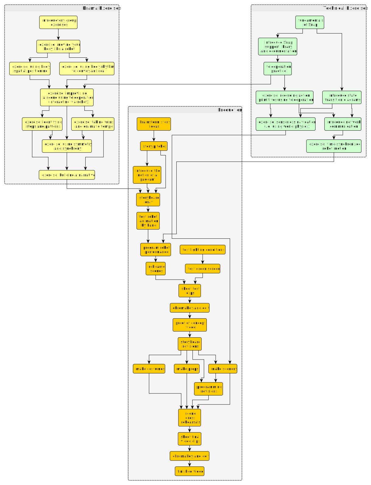

Introduction¶
This text is the companion guide to a curriculum for creating performances with robots. It is written to be accessible to middle-school students, but could be used at a variety of levels.
The essential skill is to understand the meaning of movement, action, and form in context well enough to convey a performance idea via a machine. Accomplishing this using a robot requires finding insight into performance by robot proxy as well as learning analytic and programming skills.
The text is written for the Finch Robot platform sold by BirdBrain Technologies, and uses the Snap! visual programming system. However, the core ideas are general and this course could be ported to other languages and robots.
Prerequisites¶
The text assumes that students are already familiar with the basic use of Snap!. Students already familiar with Scratch may need to study a few of the additional features provided by Snap.
The exercises assume students are already familiar with these basic programming ideas in Snap:
- imperative programming as sequences of commands
- data representation as numbers and strings (atoms)
- the idea of composite data representation as lists
- creating functions with arguments
- state machine transition diagrams and implementation
And these topics related to robotics:
- issuing robot commands to change physical state (wheel velocity, LED color)
- controlling timing of actions using delays
- sampling robot sensors to estimate physical state (proximity sensors, accelerometer)
Learning Goals¶
The following topics include the essential learning goals related to robot performance:
- capturing human performance via robot
- improvising with robots
- formulating an interaction (pas de deux or dialogue)
- the role of rhythm
- ensemble choreography
- creating meaning through context: story, setting, costuming
- writing a script for video-recorded performance
Accomplishing these objectives will require learning more fundamentals of robotics including the following:
- using data to represent actions and trajectories
- using a distributed protocol (networked key-value store)
- creating primitives for sensorless navigation
- designing environmental features for navigational assistance
Implementing these ideas will require new programming skills including the following:
- state machine graph representations
- using lists as structured data: arrays, association lists
- essential functional programming: values, iteration, and mapping
- understanding recursive functions
Daily Sessions¶
The course involves a series of hour-long sessions mixing technical exercises to build robot skills and drama exercises to develop storytelling abilities. In general, the course will loosely alternate between technical and drama topics. The specific sequence is flexible although a suggested sequence is diagrammed below.
The culminating project is framed as a production of a video pageant. The choice of video is intended to increase the flexibility of the outcome, since it eases incremental composition of a performance, reduces the demands of performing live, and simplifies the staging. However, the sequence could be easily adapted to culminate in a live performance, either improvised or rehearsed.
| Week | Activities |
|---|---|
| 1 | body movement exercises
review of fundamentals of Snap programming
pair and ensemble movement exercises
|
| 2 | introduction to Snap library, teleoperation and animation practice
sensorless navigation; synchronized movement
narrative movement exercises
|
| 3 | story brainstorming and pitching
scene storyboarding
development of robot motion using human rehearsal
|
| 4 | programming robots for performance
scene rehearsals
clip recording for proof-of-concept video
|
| 5 | costume, prop and scenery development
programming revisions
scene dress rehearsals
|
| 6 | clip recording for proof-of-concept video
final editing
final show, including live performance demonstrations
|
Course Map¶
The following map illustrates the suggested paths through the exercises and activities. The Production phase outlines the process of developing a story into a video performance. Not every activity has a corresponding written exercise, many of these are left to the discretion of the instructor.
{kind=link}